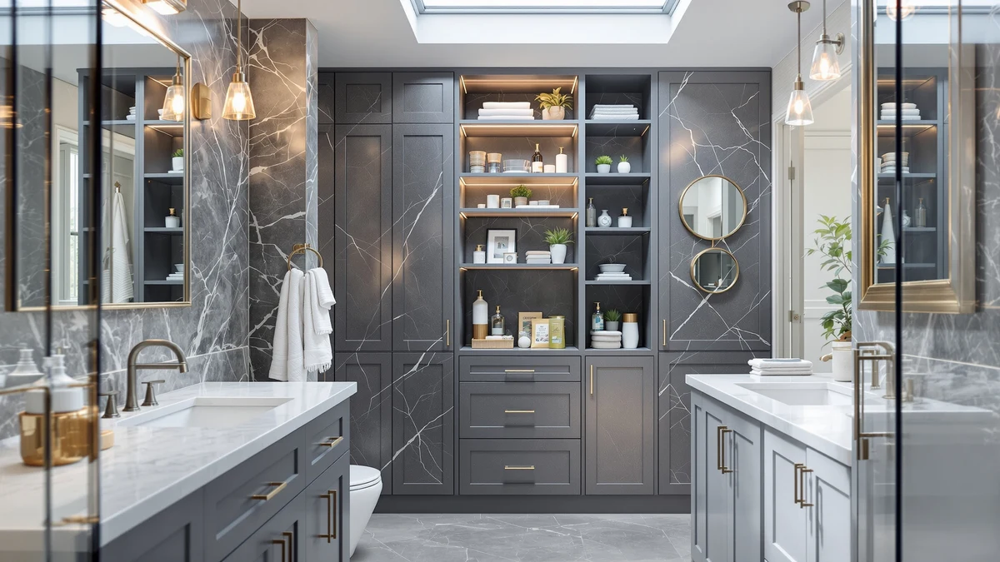

Quick Answer
The best storage for bathroom closet spaces, for most people, is the Vtopmart 4 Pack Large Stackable at $34.99. The clear bins let you see what you own and stack cleanly to double the usable height of a deep shelf. If your closet is already full, add an over-the-toilet rack like the Kitsure 3-tier ($29.99) to build storage upward.
Our pick: Vtopmart 4 Pack Large Stackable, $34.99 Check Price on Amazon
Things to Know Before You Buy
- Measure before you buy. Note the depth of your closet shelf and the clearance above your toilet tank. An over-the-toilet unit needs 25 to 31 inches of width and at least 66 inches of height to clear the tank lid and the light switch.
- Bins organize, racks add space. Stackable bins fix a messy closet you already have. Over-the-toilet racks and cabinets create new storage where you had none, so pick based on whether your problem is clutter or capacity.
- Open shelving shows everything. Open racks cost less and feel airier, but they put your spare toilet paper on display. If you want a tidy look, spend more for a cabinet with doors.
- Humidity matters. Powder-coated steel resists rust better than bare wire, and running your exhaust fan protects any bathroom closet storage from steam damage over the years.
- Assembly is on you. Every rack and cabinet here ships flat and takes 20 to 45 minutes to build with the included hardware. The bins need zero assembly.
Finding the best storage for bathroom closet spaces runs into the same problem in almost every home: most bathrooms give you almost no room to work with, and the little you have gets swallowed by towels, cleaning supplies, and half-empty bottles. You open the door and everything you own leans toward you. We spent weeks sorting through stackable bins, over-the-toilet racks, and freestanding cabinets to find the pieces that claw back usable space instead of just moving the mess around.
Our top pick is the Vtopmart 4 Pack Large Stackable set at $34.99. It solves the problem most people face first, taming a cluttered closet shelf without asking you to drill into a wall or hire anyone. The clear bins let you see what you own, and they stack so a deep shelf stops being a black hole where backup shampoo goes to disappear.
If your closet is already full and you need to build storage upward, several over-the-toilet racks and cabinets on this list turn the dead vertical space above the tank into shelves for towels and baskets. We cover seven picks in total, spanning $29.99 to $109.99, so you can match the piece to your budget and the shape of your room.
Why You Should Trust Us
I am Ilane Tall, and I have spent the last several years writing about bathroom organization for Best Bathroom Storage. To rank the best storage for bathroom closet setups, I buy the products, build them on my own floor, load them with real towels and bottles, and live with them long enough to notice where the shelf sags or the door sticks.
I do not run a fake testing lab or quote experts who do not exist. When I say a rack wobbles or a bin lid pops off, that is what happened in my bathroom. I also read through hundreds of verified buyer reviews to catch the problems that only show up after six months, like rust at a weld or a shelf clip that loosens with weight. My goal is simple: point you to the piece I would put in my own closet, and warn you off the ones I would return.
We started with a wide net of stackable bins, over-the-toilet racks, and freestanding cabinets, then narrowed the field to seven for this guide to the best storage for bathroom closet and small-bathroom needs. We favored pieces that solve a specific problem well rather than ones that try to do everything and do none of it right.
Three things drove our shortlist. First, footprint: every over-the-toilet unit had to sit on a slim base and clear a standard tank, so it steals no floor space you actually walk on. Second, capacity you can use, meaning adjustable or generously spaced shelves rather than three cramped tiers that fit nothing taller than a toothbrush. Third, materials that survive a steamy room, which ruled out flimsy chrome wire that flakes and rusts within a year. Price mattered too, and we made sure to include a sub-$35 option so a tight budget still has a real answer.
We assembled each rack and cabinet start to finish, timing the build and noting where the instructions went vague or a bolt hole missed by a hair. Then we loaded every shelf the way you would at home, stacking folded towels, baskets of toiletries, and a few heavy bottles of cleaner to see which frames stayed square and which leaned. For the Vtopmart bins, we filled a deep closet shelf and checked how well the stacked units held their shape under a full load.
We paid special attention to the details that decide whether a piece of bathroom closet storage lasts. We checked how far shelves sagged under weight, whether over-the-toilet units tipped when we pulled a towel from the top, and how the powder coating held up after weeks in a humid room. Where our hands-on time was short, we cross-checked our read against the pattern of verified buyer reviews so a lucky or unlucky single unit did not skew the verdict.
Our Picks

Vtopmart 4 Pack Large Stackable
What we like
- Clear walls let you spot contents without pulling every bin
- Stacks securely, doubling the usable height of a deep shelf
- Four large bins cover a whole closet for well under $40
Flaws but not dealbreakers
- Plastic build is practical, not a design statement
- Bins organize an existing shelf; they do not add one
| Material | Metal / wood |
| Size | Large Storage Bins |
The Vtopmart set is our answer for the most common closet problem, which is a deep shelf where everything past the front row vanishes into the dark. You get four large stackable bins, and because the walls are clear you can read the whole shelf at a glance instead of unloading three containers to find the sunscreen. This is the best storage for bathroom closet shelves that are wide and deep but otherwise wasted, and at $34.99 it costs less than a single over-the-toilet rack.
In our closet, the bins stacked two high without bowing under a full load of folded washcloths and travel bottles, and the flat tops made the second tier feel stable rather than precarious. They are plastic, so they will never read as furniture, and they need a shelf to sit on rather than creating storage out of thin air. For corralling clutter you already have, though, nothing else here delivers this much order for the money. Pair it with an over-the-toilet unit below if you also need more shelf space.

Kitsure Over Toilet Storage Rack
What we like
- Lowest price on the list at $29.99
- Three tiers reach 63.2 inches for real vertical capacity
- Simple frame builds in about 20 minutes
Flaws but not dealbreakers
- Open shelves leave everything on display
- Lightweight frame needs the included wall strap for stability
| Material | Metal / wood |
| Size | 3 Tiers (63.2"H) |
The Kitsure is the pick when your closet is full and your wallet is not. At $29.99 it is the cheapest way to add real bathroom closet storage above the toilet, and its three tiers climb to 63.2 inches, so you get genuine height rather than a token shelf or two. The frame went together in about 20 minutes with the included hardware, which makes it an easy yes for a rental you may leave in a year.
You do give something up for that price. The shelves are open, so your spare rolls and cleaning bottles sit in plain view unless you tuck them into baskets. The frame is also on the light side, and I would not skip the included anti-tip strap, especially in a home with kids who might grab the top shelf. Load it sensibly, heavy items low, and it holds a stack of towels and a caddy of daily supplies without complaint.

Spirich Over The Toilet Storage
What we like
- Enclosed cabinet hides toiletries behind a door
- Slim 9-inch depth keeps it out of the walking path
- Two-tone wood-and-metal look reads more like furniture
Flaws but not dealbreakers
- At $87.99 it costs three times the Kitsure
- Fixed cabinet shelf limits how tall an item can go inside
| Material | Metal / wood |
| Size | 24.8" (W) x 9" (D) x 66" (H) |
The Spirich is for anyone who wants the space over the toilet to look composed rather than stacked with visible clutter. A lower cabinet with a door hides the things you would rather not display, spare rolls, backup shampoo, cleaning spray, while an open shelf up top holds a folded towel or a small plant. At 24.8 inches wide and only 9 inches deep, it stays flat against the wall and out of your way in a narrow room.
This is one of the more polished pieces of bathroom closet storage here, with a wood-and-metal finish that reads like a small furniture piece instead of a utility rack. That comes at a cost, and $87.99 is real money next to the $29.99 Kitsure. The cabinet shelf is also fixed, so tall bottles have to lie down or live on the open shelf. If a tidy, finished look matters more to you than raw shelf count, it earns the premium.

Homhedy Over The Toilet Storage
What we like
- Widest unit here at 30.7 inches for maximum shelf area
- Mix of cabinet and open shelves suits varied storage
- Slim 7.8-inch depth despite the extra width
Flaws but not dealbreakers
- Most expensive pick at $109.99
- Extra width needs a wall span many small bathrooms lack
| Material | Metal / wood |
| Size | 7.8"D x 30.7"W x 65.4"H |
When your bathroom has the wall space for it, the Homhedy gives you the most room of any unit on this list. At 30.7 inches wide it spreads past the toilet on both sides, so you get broad shelves plus a cabinet, and the 7.8-inch depth keeps it from crowding a room even at that width. This is the best storage for bathroom closet overflow in a larger primary bath, where you are storing towels for a family rather than a single set.
The trade-off is size and price. At $109.99 it is the priciest pick here, and its width needs an uninterrupted stretch of wall that a cramped powder room simply will not have. Measure the gap between your toilet and the nearest wall or door before you commit. Given the space, it rewards you with adjustable shelving and a cabinet that swallows the bulky supplies the smaller racks cannot.

Meilocar Over the Toilet Storage
What we like
- Five open shelves keep everything visible and in reach
- Airy frame suits a decorated, styled bathroom
- Easy to load with baskets that hide the small stuff
Flaws but not dealbreakers
- No doors, so tidy storage depends on baskets
- Open design shows dust faster than a cabinet
| Material | Metal / wood |
| Size | 5 Open Shelves |
The Meilocar leans into open shelving, with five levels that put your rolled towels, plants, and baskets on display. If you treat your bathroom as a space to style rather than just stock, this rack gives you a wall of shelves to arrange, and the airy frame keeps a small room from feeling boxed in. Drop a few cloth baskets on the lower shelves and it doubles as tidy bathroom closet storage while the upper shelves stay decorative.
Open shelving cuts both ways. There are no doors, so anything you do not want seen has to go inside a basket, and five exposed shelves collect dust faster than a closed cabinet. At $81.99 it sits in the middle of the pack on price. For a bathroom where you want display space and easy access more than concealment, it is the flexible, good-looking choice.

VASAGLE Over the Toilet Storage
What we like
- Tallest unit at 70 inches for the most vertical storage
- Slim 24.6-inch width fits narrow walls
- Industrial wood-and-steel look works in modern rooms
Flaws but not dealbreakers
- 70-inch height crowds a low ceiling or a wall light
- Top shelf sits high enough to need a reach for short users
| Material | Metal / wood |
| Size | 7.9"D x 24.6"W x 70"H |
The VASAGLE trades width for height, standing a full 70 inches tall on a slim 24.6-inch footprint. That shape is exactly what a narrow bathroom needs, since it climbs the wall for storage instead of spreading sideways into space you do not have. The industrial mix of warm wood shelves and black steel gives it a modern look that suits a loft or a recently updated room, and it makes a strong piece of bathroom closet storage where floor space is scarce.
Height is the catch as well as the appeal. Before you buy, check the clearance to your ceiling and to any wall sconce or window above the toilet, because 70 inches climbs higher than most over-the-toilet units. The top shelf also sits high enough that a shorter person will reach or need a step for daily items, so keep everyday supplies on the middle tiers. For a slim, tall room, it is the best use of vertical space here.

Yaheetech Over The Toilet Cabinet
What we like
- Cabinet plus open shelves covers both storage styles
- Standard 25-inch width fits most bathrooms
- Mid-range $69.99 price undercuts the enclosed Spirich
Flaws but not dealbreakers
- Single cabinet holds less hidden storage than a full-door unit
- 9-inch depth juts out slightly more than the slimmest racks
| Material | Metal / wood |
| Size | 9″D × 25″W × 66″H |
The Yaheetech splits the difference between the open Meilocar and the closed Spirich, pairing a small cabinet with open shelves in one 66-inch frame. That mix suits most people, because you can stash the things you would rather hide behind the door and leave towels and decor on the shelves above. At a standard 25 inches wide it fits the wall span of a typical bathroom, and the $69.99 price sits comfortably below the fully enclosed cabinet.
Because it is part open and part closed, it does not lead in either category. The single cabinet holds less than the Spirich behind its full door, and at 9 inches deep it steps out a touch further than the slimmest racks. For a shopper who cannot decide between display and concealment, though, this balanced piece of bathroom closet storage is the sensible middle path, and it was one of the easier units to assemble in our testing.
Quick Comparison
| Product | Material | Price | Rating | Best for | Get it |
|---|---|---|---|---|---|
| Vtopmart 4 Pack Large Stackable | Metal / wood | $34.99 | 4 | Organizing deep closet shelves | View on Amazon → |
| Kitsure Over Toilet Storage Rack | Metal / wood | $29.99 | 4 | Renters on a tight budget | View on Amazon → |
| Spirich Over The Toilet Storage | Metal / wood | $87.99 | 4 | Hiding clutter behind a door | View on Amazon → |
| Homhedy Over The Toilet Storage | Metal / wood | $109.99 | 4 | Larger bathrooms needing max shelf area | View on Amazon → |
| Meilocar Over the Toilet Storage | Metal / wood | $81.99 | 4 | Open display of towels and baskets | View on Amazon → |
| VASAGLE Over the Toilet Storage | Metal / wood | $69.99 | 4 | Narrow rooms with height to spare | View on Amazon → |
| Yaheetech Over The Toilet Cabinet | Metal / wood | $69.99 | 4 | Mixing open and hidden storage | View on Amazon → |
The Competition
We looked at plenty of other options before settling on these seven picks for the best storage for bathroom closet and small-bathroom use, and a few common types did not make the cut.
We skipped the cheap chrome-plated wire shelving units you see everywhere under $25. They look fine in the box, but the thin plating flakes at the joints within a year in a steamy room, and the wire shelves let small items tip and fall through. The powder-coated steel frames on our list cost a little more and hold up far better.
We also passed on tension-pole caddies that wedge between floor and ceiling. They add shelves without a footprint, but they rely on friction that loosens over time, and a loaded pole that slips is a real hazard above a hard tile floor. For freestanding weight, a based unit like the Kitsure or VASAGLE is the safer call.
Finally, we left out ultra-cheap folding fabric cubes marketed as closet storage. They collapse under the weight of toiletries and sag out of shape, where the rigid Vtopmart bins keep their form and stack cleanly. If you want your bathroom closet storage to still look organized in a year, the sturdier picks earn their small premium.
The Bottom Line
For most homes, the best storage for bathroom closet spaces is the Vtopmart 4 Pack Large Stackable at $34.99, which turns a chaotic deep shelf into an organized, visible system for the price of a takeout dinner. If your closet is already packed, build upward with the budget Kitsure rack ($29.99) or, for a finished look, the enclosed Spirich cabinet. Match the piece to your wall space and your tolerance for visible clutter, and you will get a bathroom that stays orderly well past the first week.